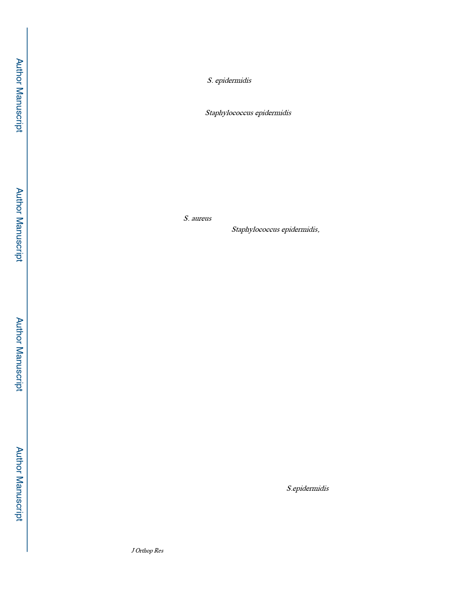

Tomizawa et al.
Page 3
loosening or suspicion of uncleanness.17 It is also reported that biofilms are responsible for
‘aseptic’ implant-loosening18.
As described above, although S. epidermidis is one of the normal bacterial flora, it also the
cause of low grade infection or might be the cause of “ aseptic” implant loosening. 9,19
Thus, we aimed to compare and contrast the pathological features of a biofilm-producing
strain of methicillin-resistant Staphylococcus epidermidis (MRSE) RP62A, which is a
strongly adherent, slime-producing, and was originally isolated from a patient with
intravascular catheter-associated sepsis.20 In the RP62A vs. highly virulent USA300 in a
quantitative murine model of implant-associated osteomyelitis21. We hypothesized that
RP62A was less destructive than USA300 but produced a biofilm that inhibits osseous
integration of the implant.
Materials and Methods
Staphylococci strains and in vitro culture
As a representative of S. aureus, USA300 LAC,22 which is the most prevalent community-
acquired MRSA strain, was used. For Staphylococcus epidermidis, RP62A, which is
biofilm-producing clinical isolate RP62A strain, was used. RP62A is capable of
accumulated growth and subsequent biofilm development, which contribute to its
pathogenicity in foreign-body infections20. All strains were cultured in tryptic soy broth
(TSB) media.
Animal surgeries
All animal experiments were performed on the national guidelines under the approval of the
university committee on animal resources. The transtibial implant associated osteomyelitis
model, which does not display sexual dimorphism, was used as previously described. 21
Briefly, the implant was made of flat stainless-steel wire (cross-section 0.2 mm × 0.5 mm;
MicroDyne Technologies, Plainville, CT) which was cut to 4 mm length and bent into an L-
shaped implant: long side 3 mm, short side 1 mm. After sterilization, the implant was soaked
in the overnight culture of USA300 or RP62A for 20 minutes then air dried for 1 minutes.
For control, implant was soaked in broth without bacteria in the same manner. BALB/c
female 6–8-week-old mice were anesthetized with Ketamine (100 mg/kg) and Xylazine (10
mg/kg) or Pentobarbital (40mg/kg) with inhalation of isoflurane in oxygen for maintenance.
With 5 mm incision, the medial cortex of proximal tibia was exposed, then a hole was drilled
in medial cortex with a 23G needle (0.65 mm in diameter) without penetrating the lateral
cortex; then the lateral cortex was drilled through the medial hole with a 30G needle (0.3
mm diameter). The L-shaped implant which was inoculated bacteria or vehicle was inserted
from the medial side and press-fit with its long end and its L tightly pressed against the
medial side of the tibia. The initial bacterial burden determined from Colony forming unit
(CFU) assay from the implant just before the insertion was 0.00 in Sterile, 1.6 × 105 in
RP62A and 2.1 × 105 in USA300. The bacterial load of S.epidermidis was sufficient to
cause toxicity from a previous report-results23. After surgery, mice were returned to standard
isolator cages without additional treatment until sacrifice at day 14 unless otherwise
described, and buprenorphine was administrated for their pain relief for 2 days.
J Orthop Res. Author manuscript; available in PMC 2021 April 01.